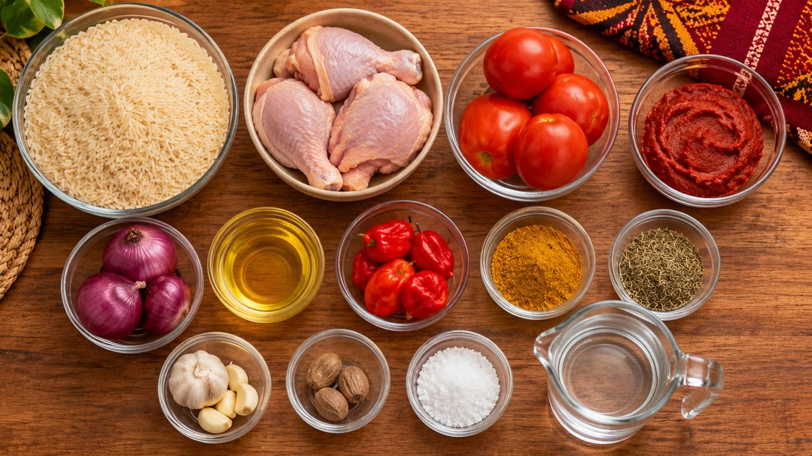
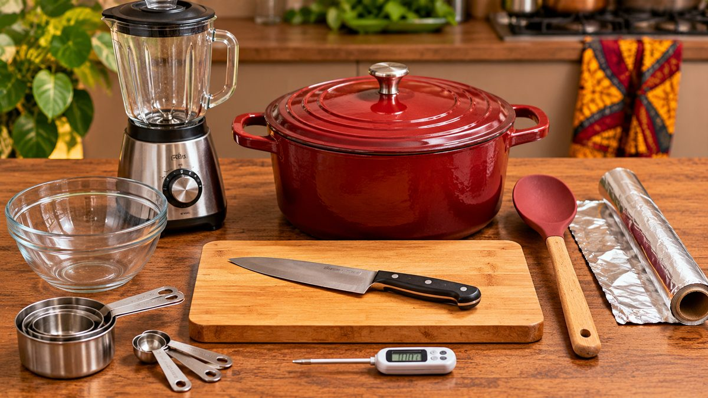

Orientation
Welcome to Section 3! Now you put your knowledge into practice by preparing Nigerian-style Jollof rice in a home kitchen.
Preparing Jollof takes more than combining ingredients. The order you add them, the tomato base, the rice variety, the amount of liquid and the heat all shape the result. You will learn to observe and decide at each stage.
Why it matters: Getting organized first helps you keep the right sequence and avoid interruptions once the pot is on the heat.
Given three cooking scenarios involving the selected Jollof rice preparation, the learner will select the appropriate corrective action for conditions involving insufficient moisture, excess moisture, undercooking, or burning in at least two of the three scenarios.
How you’ll show it: the Troubleshooting Readiness Check on page 3.7. Then you will prepare the dish itself (page 3.9).
Ingredients

- Rice
- Chicken
- Fresh tomatoes
- Tomato paste
- Onions
- Cooking oil
- Pepper
- Curry powder
- Thyme
- Nutmeg
- Garlic
- Salt
- Water
Rice is the base. Tomatoes, tomato paste, onions, pepper and seasonings give colour, flavour and aroma. Chicken is served alongside, and its broth is used to cook the rice.
Follow the exact quantities in the recipe provided for this practical activity. Don’t estimate when the recipe gives a measurement.
Equipment and cookware

- A cooking pot of suitable size, with a lid
- Knife and chopping board
- Blender (or similar) for the tomato mixture
- Cooking spoon or spatula, measuring utensils, a bowl for prepared ingredients
- Food thermometer — to check the chicken’s internal temperature
- Aluminum foil — for the moisture-adjustment technique on page 3.7
Choose a pot that holds the rice and cooking mixture comfortably. A pot that is too small makes it hard to spread the rice evenly. The bottom can overcook or burn while the top stays undercooked.
Prepare your workspace
Clean up
Wash your hands and clean your work surface.
Gather
Gather and organize all ingredients.
Check your tools
Make sure cookware and utensils are clean and ready.
Separate raw chicken
Keep raw chicken away from ingredients that will be eaten or used without further cooking.
Prep
Chop, blend and measure the ingredients that need it. Identify your rice variety now — it decides how you prepare the rice on page 3.5.
Watch for the cues, not just the steps
This demonstration shows the whole preparation. Watch it once now from start to finish, then come back to it as you study each stage.
- the colour of the onions before the tomato paste goes in
- how the tomato base changes as it cooks
- how liquid is managed once the rice is added
- how the heat is controlled while the rice cooks
- the texture of the grains in the finished rice
Video: Kiki Foodies, How to make the perfect Jollof rice | Smokey, rich, and delicious (YouTube). Captions are turned on by default — use the CC button to change them.
Quick check: getting ready
Key takeaways
- Gather every ingredient and tool before you start cooking.
- You need a food thermometer and aluminum foil, not just a pot.
- Identify your rice variety now — it changes how you prepare the rice.